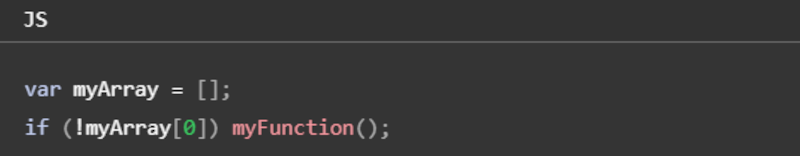

Para criar as variáveis usamos nomes simbólicos para os valores em sua aplicação, o nome das variáveis não podem começar com números, porém podem começar com uma letra qualquer (maiúscula ou minúscula), sublinhado (_), ou cifrão ($), já os carateres subsequentes podem ser números. Exemplo: (nome / _idade / $salario / vaga1).
Podemos declarar uma variável de duas formas:
Se você criar uma variável e não especificar o valor inicial, ela irá ter o valor undefined, já se você tentar acessar um variável inexistente, resultará no lançamento de uma exeção ReferenceError, exemplo:
Você pode usar undefined para determinar se uma variável tem um valor. No código a seguir, não é atribuído um valor de entrada na variável e a declaração if será avaliada como verdadeira (true).
O valor undefined se comporta como falso (false), quando usado em um contexto booleano. Por exemplo, o código a seguir executa a função myFunction devido ao elemento myArray ser indefinido:

O valor undefined coverte-se para NaN (Not A Number) quando usado no contexto numérico.
Quando você avalia uma variável nula (null), o valor nulo se comporta como 0 em contexto numéricos, e como falso (false) em contextos booleanos.
Constantes
Você pode criar uma constante apenas de leitura por meio da palavra-chave const. A sintaxe de um identificador de uma constante é semelhante ao identificador de uma variável: o nome de uma constante não pode começar com números, porém podem começar com uma letra qualquer (maiúscula ou minúscula), sublinhado (_), ou cifrão ($), já os carateres subsequentes podem ser números. Uma constante não pode alterar seu valor por meio de uma atribuição ou ser declarada novamente enquanto o script está em execução, deve ser inicializada com um valor.
As regras de escopo para as constantes são as mesmas para as váriaveis let de escopo de bloco. Se a palavra-chave const for omitida, presume-se que o identificador represente uma variável. Você não pode declarar uma constante com o mesmo nome de uma função ou variável que estão no mesmo escopo.
Tipos primitivos
Os tipos primitivos em JavaScript são valores simples e imutáveis, são usados para representar informações básicas e usuais, conseguimos identificar qual é o tipo primitivo utilizando typeof, agora segue os 7 tipos de dados:
Conseguimos converter o tipo primitivo de um elemento usando:
.parseInt( ) → converte para Number = número inteiro.
.parseFloat( ) → converte para Number = número real.
Number( ) → converte para Number = próprio JS decide se é inteiro ou real.
String( ) → converte para String.
Boolean( ) → converte para Boolean.
Para verificar o tipo primitivo de um elemento, podemos utilizar o parâmetro typeof ou alguns desses comandos:
.isNaN( ) → verifica se é um NaN (Not A Number).
.isArray( ) → verifica se é um array.
.isInteger( ) → verifica se é um número inteiro.
.isFinite( ) → verifica se é um número finito.
.isSafeInteger( ) → verifica se é um número inteiro seguro.
.MAX_VALUE → verifica o maior número possível.
Operadores matemáticos
Os operadores são elementos essenciais na linguagem de programação JavaScript. Eles permitem realizar uma variedade de operações e manipulações de dados. Dominar os operadores aritméticos, de atribuição, de comparação, lógicos, de concatenação, ternários e de acesso a propriedades é essencial para escrever código eficiente e expressivo.
Operadores aritméticos
Os operadores aritméticos são usados para realizar operações matemáticas básicas, como adição (+), subtração (-), multiplicação (*) e divisão (/). Além disso, temos o operador de resto (%), exponenciação (**) e incremento/decremento (++/--), que podem ser úteis em várias situações.
Operadores aritméticos
Operador
Descrição
+
Adição
-
Subtração
*
Multiplicação
/
Divisão
**
Exponencial
%
Resto da divisão
++
Incrementar
--
Decrementar
Operadores de Atribuição
Os operadores de atribuição são usados para atribuir valores a variáveis. O operador de atribuição básico é o "=", mas também existem operadores combinados, como "+=", "-=", "*=", "/=", entre outros, que permitem atribuir e operar ao mesmo tempo.
Operadores de Atribuição
Operador
Equivale a
Utilização
=
x = y
x = y
+=
x = x + y
x += y
-=
x = x - y
x -= y
*=
x = x * y
x *= y
/=
x = x / y
x /= y
%=
x = x % y
x %= y
Operadores de Comparação
Os operadores de comparação são usados para comparar valores e retornar um resultado booleano (verdadeiro ou falso). Exemplos de operadores de comparação incluem "==", "!=", "===", "!==", ">", "<", ">=" e "<=". Eles são usados principalmente em instruções condicionais e loops.
Operadores de Comparação
Operador
Descrição
==
Igual a
===
Mesmo valor e mesmo tipo
!=
Diferente de
!==
Diferente em valor e tipo
<
Menor que
>
Maior que
<=
Menor ou igual a
>=
Maior ou igual a
Operadores Lógicos
Os operadores lógicos são usados para combinar ou inverter valores booleanos. Os operadores "&&" (E lógico), "||" (OU lógico) e "!" (NÃO lógico) são usados para avaliar condições complexas e tomar decisões com base nos resultados.
Operadores Lógicos
Operador
Descrição
&&
'e' lógico
||
'ou' lógico
!
'não' lógico
Operadores Ternários
O operador ternário é uma forma concisa de expressar uma instrução condicional em JavaScript. Ele usa a sintaxe "condição ? valor1 : valor2" e retorna valor1 se a condição for verdadeira e valor2 se for falsa. É útil para simplificar estruturas condicionais simples.
Operador Ternário
(condição) ? verdadeiro : falso
Um exemplo simples utilizando operador ternário.
Estruturas de controle condicional
As estruturas de controle condicional são usadas para determinar quais blocos de código devem ser executados, dependendo de uma condição especificada. Elas são fundamentais para guiar o fluxo de execução do código, permitindo que diferentes ações sejam tomadas com base em diferentes situações.
Obs: Operador ternário também é uma forma concisa de escrever uma condição if / else.
Estruturas de repetição
As estruturas de repetição em JavaScript são ferramentas que permitem repetir um bloco de código várias vezes, até que uma condição seja atingida. São fundamentais para a programação eficiente e elegante.
Array / Vetor
O array é uma estrutura de dados que armazena uma coleção de elementos, geralmente do mesmo tipo, em uma única variável. Os elementos de um array são acessados por meio de um índice, que começa em 0, ou seja, o primeiro elemento do array tem índice 0, o segundo elemento tem índice 1, e assim por diante. Para criar um array em JavaScript, você pode usar colchetes [ ] e separar os elementos por vírgulas. Exemplo:
.push() → adiciona um ou mais elementos ao final de um array e retorna o novo comprimento do array.
.sort() → ordena os elementos de um array em ordem crescente ou alfabética.
.length() → quantidade de elementos dentro do array.
.split() → divide uma string em um array de substrings com base em um separador especificado.
.indexOf() → busca valor dentro do array e retorna o índice da primeira ocorrência do valor especificado, ou -1 se o valor não for encontrado.
Object
O objeto em JavaScript é uma estrutura de dados que armazena uma coleção de pares de chave-valor, onde cada chave é uma string que representa o nome de um atributo e o valor é o valor correspondente desse atributo. Para criar um objeto em JavaScript, você pode usar chaves { } e separar os pares de chave-valor por vírgulas. Exemplo:
Funções
As funções no JavaScript são blocos de código que realizam tarefas específicas. Elas são um dos principais componentes da linguagem e são fundamentais para escrever código modular, organizado e reutilizável. Para definir uma função você pode usar a palavra-chave function ( + nome da função) e os parâmetros entre parênteses separados por vírgulas, e o bloco de código que será executado quando a função for chamada, que é definido entre chaves { }. Exemplo:
A definição de uma função não a executa. Definir a função é simplesmente nomear a função e especificar o que fazer quando a função é chamada. Para chamar a função podemos usar o Eventos DOM (como é mostrado na página anterior), ou podemos executar realmente as ações especificadas com os parâmetros indicados. Por exemplo, se você definir a função quadrado, você pode chamá-la do seguinte modo:
Uma função pode chamar a si mesma. Por exemplo, a função que calcula os fatoriais recursivamente pode ser definida da seguinte forma:
Uma função que chama a si mesma é chamada de função recursiva. Em alguns casos, a recursividade é análoga a um laço. Ambos executam o código várias vezes, e ambos necessitam de uma condição (para evitar um laço infinito, ou melhor, recursão infinita, neste caso).
Eventos
Os eventos no JavaScript são ações que ocorrem no navegador e que permitem que o desenvolvedor reaja a essas ações. Eles são uma ferramenta que possibilita a interação entre o usuário e a página web. Os eventos são chamados de "triggers" (acontecimentos) e podem ser de vários tipos, como: clique do mouse, movimento do mouse, pressionar uma tecla, etc. Como é mostrado na página anterior. Ou para ver alguns exemplos de eventos, clique aqui.
.length → quantos caracteres a string tem
.charAt( ) → mostra o caractere na posição desejada
.indexOf( ) → mostra a posição do caractere desejado
.lastIndexOf( ) → mostra a última posição do caractere desejado
.substring( ) → mostra uma parte da string
.substr( ) → mostra uma parte da string
.push( ) → adiciona
Formatando String
.toUpperCase( ) → tudo para maiúscula
.toLowerCase( ) → tudo para minúscula
.replace( ) → substitui uma parte de um string por uma substring
.trim( ) → remove espaços em branco no início e no fim da string
.repeat( ) → repete a string
.split( ) → divide uma string em substrings e retorna um array
.concat( ) → junta as strings ou arrays
.slice( ) → extrai uma parte da string ou de um array a partir de um ponto inicial e um ponto final
.substr( ) → extrai caracteres de uma string a partir de um ponto inicial e um ponto final
.substring( ) ↠ extrai uma parte de uma string, entre dois índices específicados
Formatando Números
.toFixed(n°) → n° p/ qnt de casas decimais
.replace(' ', ' ') → troca caracteres
new Date() → mostra dia, mês, ano, data e hora atual
new Date() + .getHours → mostra o horário atual
new Date() + .getMinutes → mostra o minuto atual
new Date() + .getSeconds → mostra o segundo atual
new Date() + .getMilliseconds → mostra o milissegundo atual
new Date() + .getDay → mostra o dia da semana atual
new Date() + .getDate → mostra o dia do mês atual
new Date() + .getMonth → mostra o mês atual
new Date() + .getFullYear → mostra o ano atual
Math.ceil() → arredonda para cima
Math.floor() → arredonda para baixo
Arrays
Array.isArray() → verifica se é um array
Array.from() → converte uma string em array
Array.of() → converte um array em string
Array.prototype.push() → adiciona um elemento no final do array
Array.prototype.pop() → remove o último elemento do array
Array.prototype.shift() → remove o primeiro elemento do array
Array.prototype.unshift() → adiciona um elemento no início do array
Array.prototype.splice() → remove um ou mais elementos do array
Array.prototype.slice() → retorna uma parte do array
Array.prototype.concat() → concatena dois arrays
Array.prototype.join() → junta todos os elementos de um array em uma string
Array.prototype.indexOf() → retorna a posição do primeiro elemento encontrado
Array.prototype.lastIndexOf() → retorna a posição do último elemento encontrado
Array.prototype.includes() → verifica se um elemento está presente no array
Array.prototype.sort() → ordena os elementos do array
Array.prototype.reverse() → inverte a ordem dos elementos do array
Array.prototype.map() → cria um novo array com os resultados de uma função aplicada a cada elemento do array original
Array.prototype.filter() → cria um novo array com os elementos que passam em uma condição
Array.prototype.reduce() → reduz um array a um único valor
Array.prototype.reduceRight() → reduz um array a um único valor, começando pelo final
Array.prototype.every() → verifica se todos os elementos do array passam em uma condição
Array.prototype.some() → verifica se algum elemento do array passa em uma condição
Array.prototype.find() → retorna o primeiro elemento que passa em uma condição
Array.prototype.findIndex() → retorna o índice do primeiro elemento que passa em uma condição
Array.prototype.flat() → retira os sub-arrays de um array
Array.prototype.flatMap() → retorna um novo array com os resultados de uma função aplicada a cada elemento do array original, e depois retira os sub-arrays